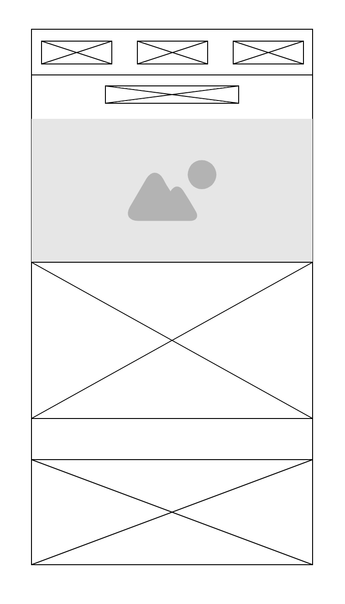

Site Plan: Exploring the African Safari
Site Name
The site name for this project is Exploring the African Safari.
This name was chosen because it reflects the focus of the website, which is to provide information about the diverse habitats of the African safari and the accommodations available for travelers. The name is clear and immediately communicates the site's purpose.
Optional Domain Availability: exploringthesafari.com
Site Purpose
The purpose of the website is to educate visitors about the different habitats found within the African safari and provide valuable information regarding travel accommodations. The site will feature details about various safari destinations, the animals that inhabit them, and accommodation options ranging from luxury lodges to budget-friendly camps.
Scenarios
Here are some common questions that visitors might have when browsing the website:
- What are the best safari destinations for wildlife photography?
- What types of accommodation are available for families on safari?
Color Schema
The website will use a natural, earthy color palette to reflect the African safari theme. The colors selected are:
- Dark Green: #004d00 (used for headings and subheadings)
- Orange: #ff6600 (used for accents, buttons, and highlights)
- Light Gray: #f1f1f1 (used for the background color)
- Dark Gray: #333333 (used for body text)
Typography
The following fonts will be used on the website:
- Primary Font: Arial, sans-serif (used for body text and paragraph content)
- Secondary Font: Georgia, serif (used for headings and subheadings)
Wireframe
The wireframe below outlines the layout of the home page on both mobile and desktop views. It represents the basic structure and placement of content:
Mobile View
Desktop View